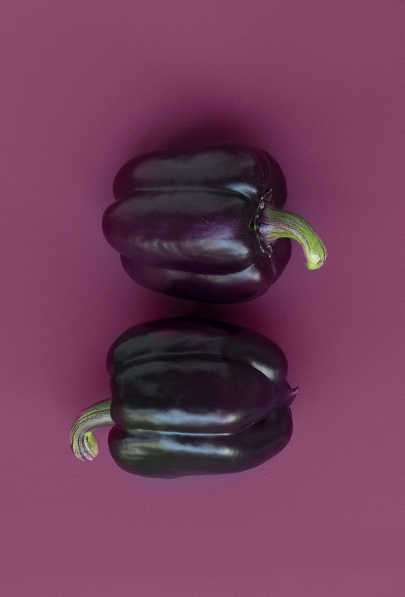

OVER
Gelegen aan de Westbekesluis, op wandelafstand van prachtige natuurgebieden, vind u Bistro Korg. Bij ons kan u naast sfeervol dineren ook gezellig wegdromen op ons zomerterras met uitzicht op de sluis of aan onze luxueuze bar. Kijk gerust verder op onze website voor een overzicht van ons uitgebreide aanbod aan dranken en gerechten.
OPEN
-
Maandag: GESLOTEN
-
Dinsdag: 12:00 - 14:30 & 17:00 - 02:00
-
Woensdag: 12:00 - 14:30 & 17:00 - 02:00
-
Donderdag: 12:00 - 14:30 & 17:00 - 02:00
-
Vrijdag: 12:00 - 14:30 & 17:00 - 02:00
-
Zaterdag: 12:00 - 14:30 & 17:00 - 02:00
-
Zondag: 12:00 - 14:30 & 17:00 - 02:00
